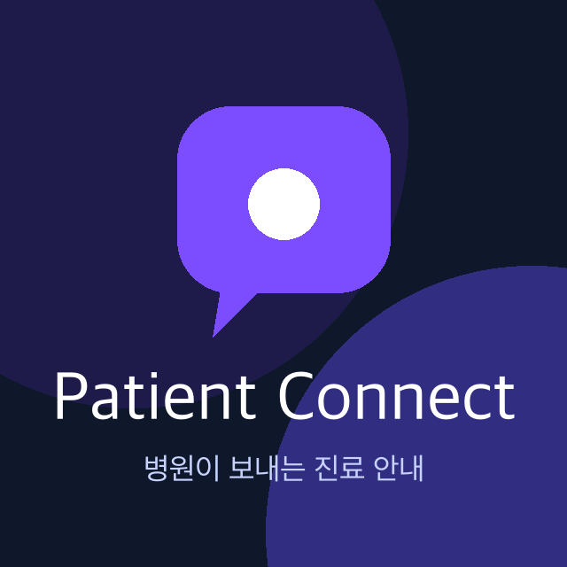

Patient Connect (페이션트 커넥트)

병원이 환자에게 보내는 진료 안내, Patient Connect
Patient Connect는 페이션트퍼널이 개발·운영하는 병원용 환자 안내 서비스입니다. 병원(의원·치과 등)이 진료 후 환자에게 전달할 안내 자료를 고르면, 페이션트퍼널의 공식 카카오톡 채널 Patient Connect가 병원의 요청을 받아 환자에게 카카오톡으로 보내드립니다.
카카오톡 채널 Patient Connect (@patientconnect)1. 서비스 내용 (콘텐츠)
진료 안내 자료
치료 과정 설명, 치료 전·후 주의사항, 다음 방문 안내 등 병원이 환자에게 전달하는 설명 자료입니다.
상담 정리 자료 (나의 상담 리포트)
병원에서 받은 상담 내용을 환자가 다시 볼 수 있도록 정리한 자료입니다. 휴대폰 번호 뒤 4자리로 본인 확인 후 열람합니다.
비용·치료 계획 안내
환자가 요청한 치료 항목의 비용과 계획을 정리해 안내합니다. 할인·판촉 메시지는 보내지 않습니다.
2. 발송 방식
| 발신 채널 | 카카오톡 채널 Patient Connect (검색 ID @patientconnect, pf.kakao.com/_wXJrX) |
|---|---|
| 채널 운영 주체 | 페이션트퍼널 (사업자등록번호 469-01-03014, 대표 문석준) — 페이션트퍼널이 개발한 병원용 소프트웨어(Patient Touch 등)의 발송 기능을 대행하는 플랫폼 채널입니다. |
| 메시지 종류 | 정보성 알림톡 (병원과 환자의 진료 관계에 따라 전달되는 안내). 광고성 메시지는 발송하지 않습니다. |
| 병원명 표기 | 모든 메시지 첫 줄에 [병원명]을 표기하고, 마지막 줄에 "이 메시지는 #{병원명}의 요청으로 'Patient Connect'가 발송합니다"를 고지합니다. |
| 수신 거부 | 메시지 내 안내에 따라 언제든 수신을 거부할 수 있습니다. |
3. 메시지 예시
[OO치과] 홍길동님, 안녕하세요.
9월 10일 상담하신 내용을 정리해 드렸습니다.
아래 버튼에서 나의 상담 리포트를 확인하실 수 있습니다.
열람 시 본인 확인을 위해 휴대폰 번호 뒤 4자리를 입력해 주세요.
리포트는 10월 10일까지 열람하실 수 있습니다.
문의: 02-000-0000
※ 이 메시지는 OO치과의 요청으로 'Patient Connect'가 발송합니다.
4. 페이션트퍼널의 다른 서비스
페이션트퍼널은 병원 경영 소프트웨어 Patient Series를 개발·운영합니다. 같은 사업자로 운영하는 카카오톡 채널 Patient Thermo(환자 마음의 온도 설문)가 이미 비즈니스 채널로 인증되어 있으며, Patient Connect는 그 형제 서비스입니다.
- Patient Thermo — 익명 환자 설문·미션 이행률 측정
- Patient Touch — 상담 기록·환자 리포트 (Patient Connect의 발송 요청이 여기서 생성됩니다)
- 전체 서비스와 요금
5. 운영사 정보
| 상호 | 페이션트퍼널 |
|---|---|
| 대표자 | 문석준 |
| 사업자등록번호 | 469-01-03014 |
| 통신판매업신고 | 제2024-서울강남-03817호 |
| 주소 | 서울특별시 강남구 영동대로 602, 6층 z208 (삼성동, 삼성동 미켈란 107) |
| 연락처 | 010-4445-1873 · patientsfunnel@gmail.com |
| 홈페이지 | https://patientfunnel.kr |